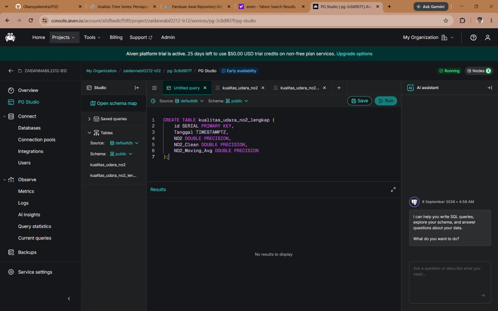
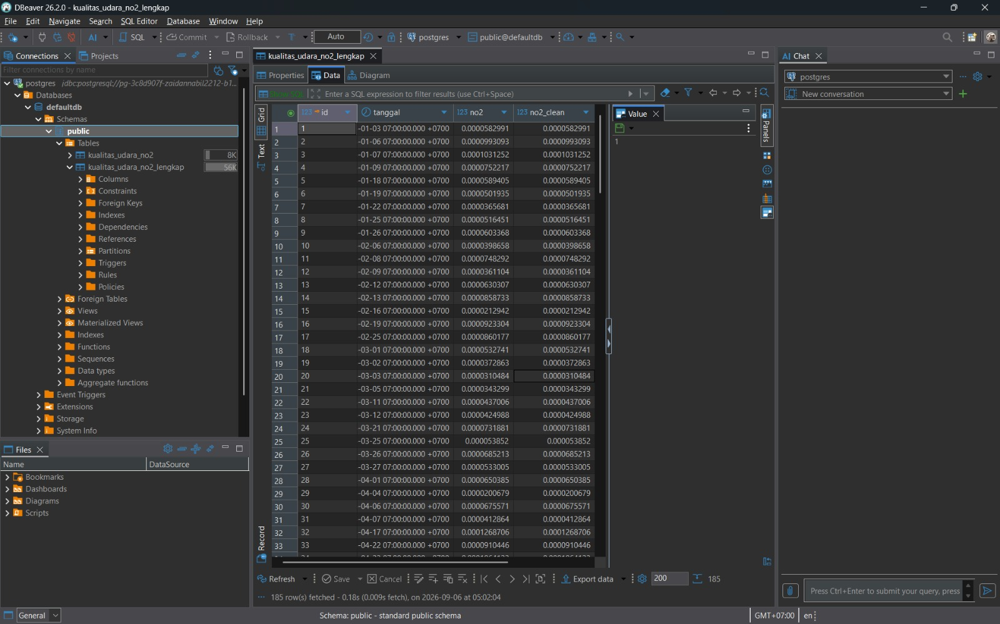
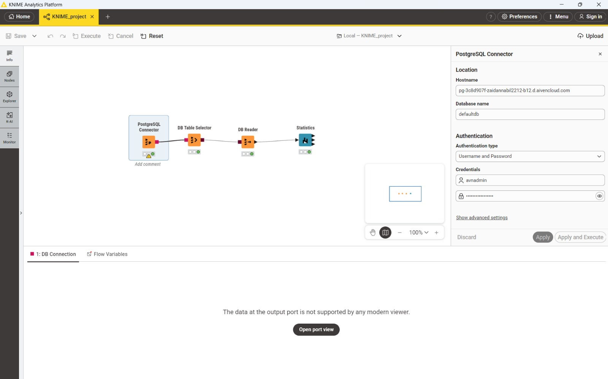
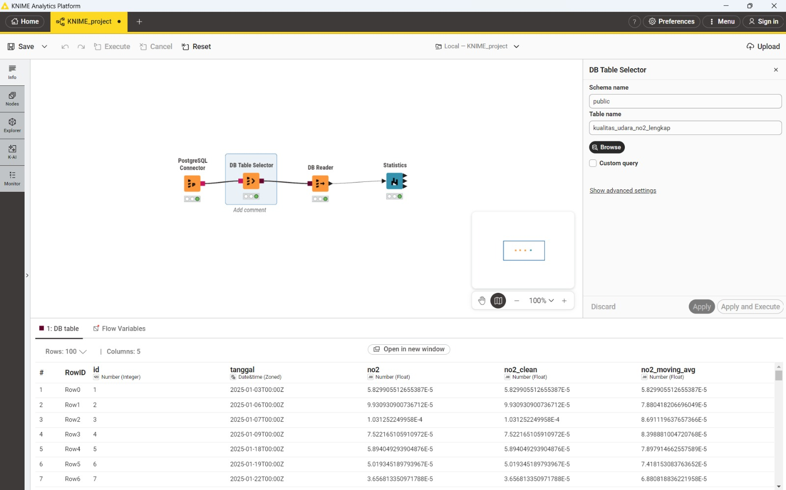
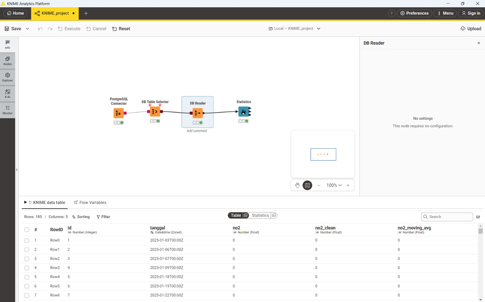
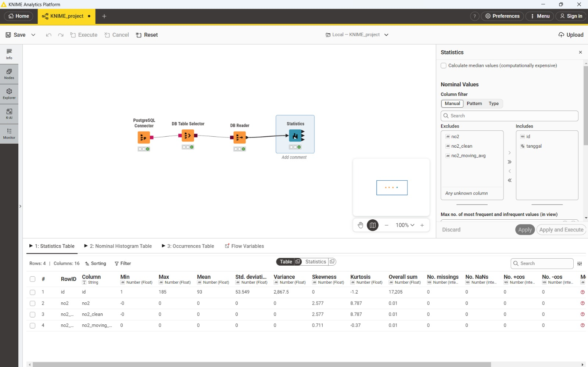

Analisis Time Series: Persiapan Data Kualitas Udara (NO2) Suramadu#
Dalam proyek ini, kita menggunakan data historis kualitas udara, khususnya konsentrasi gas Nitrogen Dioksida (NO2), yang direkam berdasarkan urutan waktu. Sebelum melakukan pemodelan dan peramalan tren time series, data mentah dikelola di dalam cloud database agar proses penarikan data ke sistem analitik menjadi lebih efisien dan terpusat.
Dokumen ini mencakup alur lengkap mulai dari migrasi data awal hingga pengolahan dasar menggunakan KNIME Analytics Platform.
1. Migrasi Data ke Aiven PostgreSQL (via DBeaver)#
Tahap pertama bertujuan untuk memindahkan data historis NO2 ke dalam layanan cloud database Aiven (project zaidannabil2212-b12, service pg-3c8d907f) agar siap diakses secara daring dari berbagai platform, termasuk DBeaver dan KNIME.
1.1. Pembuatan Struktur Tabel di Aiven#
Langkah pertama sebelum memasukkan data adalah membuat penampung datanya, yaitu sebuah tabel. Karena ini adalah analisis runtun waktu, kolom waktu (Tanggal) wajib didefinisikan dengan tipe data yang mendukung informasi zona waktu, yaitu TIMESTAMPTZ.
Melalui fitur PG Studio di dashboard Aiven, tabel dibuat dengan menjalankan query SQL berikut pada source defaultdb dan schema public:
CREATE TABLE kualitas_udara_no2_lengkap (
id SERIAL PRIMARY KEY,
Tanggal TIMESTAMPTZ,
NO2 DOUBLE PRECISION,
NO2_Clean DOUBLE PRECISION,
NO2_Moving_Avg DOUBLE PRECISION
);
Tabel ini dirancang tidak hanya menyimpan nilai NO2 mentah, tapi juga dua kolom turunan yang sudah disiapkan sejak tahap awal:
NO2_Clean: nilai NO2 setelah melalui proses pembersihan data (penanganan outlier/nilai kosong).NO2_Moving_Avg: nilai rata-rata bergerak (moving average) dari NO2, digunakan untuk menghaluskan tren jangka pendek.
Selain tabel kualitas_udara_no2_lengkap ini, terdapat juga tabel kualitas_udara_no2 yang menyimpan data mentah sebelum diperkaya dengan kolom-kolom turunan tersebut.

Keterangan: Tampilan PG Studio di Aiven saat queryCREATE TABLE kualitas_udara_no2_lengkap dijalankan.
1.2. Menghubungkan DBeaver dengan Aiven#
Agar data dapat dikelola dan diimpor dengan mudah dari komputer lokal, DBeaver dihubungkan ke database Aiven di cloud.
Langkah-langkah koneksi:
Di DBeaver, klik New Database Connection dan pilih PostgreSQL.
Masukkan parameter koneksi yang didapatkan dari halaman Overview di dashboard Aiven, meliputi:
Host:
pg-3c8d907f-zaidannabil2212-b12.d.aivencloud.comPort: Port PostgreSQL dari Aiven.
Database:
defaultdbUsername & Password: kredensial
avnadmindari Aiven.
Penting: buka tab SSL atau Driver Properties, pastikan parameter
sslmodediatur menjadirequire. Ini wajib dilakukan agar DBeaver dapat terhubung ke Aiven yang mewajibkan koneksi aman menggunakan SSL.Klik Test Connection untuk memastikan koneksi berhasil, lalu klik Finish.
1.3. Import Data ke DBeaver#
Setelah DBeaver berhasil terhubung ke Aiven, tabel kualitas_udara_no2_lengkap sudah terlihat di skema public (defaultdb > Schemas > public > Tables), berdampingan dengan tabel mentah kualitas_udara_no2.

Keterangan: Tampilan DBeaver dengan datakualitas_udara_no2_lengkap yang berhasil ditarik, memperlihatkan kolom id, tanggal, no2, dan no2_clean.
Verifikasi jumlah baris data dapat dilakukan dengan menjalankan query SQL berikut:
SELECT COUNT(*) FROM kualitas_udara_no2_lengkap;
Hasilnya menunjukkan total 185 baris data telah berhasil diunggah dan tersimpan dengan aman di cloud database Aiven.
2. Integrasi dan Pengolahan Time Series di KNIME#
Setelah data siap dan tersimpan dengan aman di cloud database Aiven, tahapan selanjutnya adalah menarik data tersebut ke ruang kerja lokal (KNIME Analytics Platform) untuk pra-pemrosesan dan eksplorasi data.
Menghubungkan Aiven ke KNIME#
Proses menghubungkan KNIME ke Aiven pada prinsipnya mirip dengan menghubungkan DBeaver. Alur koneksinya (workflow) dibangun menggunakan empat node utama secara berurutan:
PostgreSQL Connector: Diatur menggunakan detail host, database, dan kredensial server Aiven:
Hostname:
pg-3c8d907f-zaidannabil2212-b12.d.aivencloud.comDatabase name:
defaultdbAuthentication type: Username and Password, dengan kredensial
avnadmin
Sama seperti pada DBeaver, opsi sslmode=require perlu diaktifkan (melalui Show advanced settings) agar node dapat terhubung, karena Aiven menuntut koneksi SSL.

Keterangan: Jendela konfigurasi node PostgreSQL Connector di KNIME, tempat hostname dan kredensial database Aiven dimasukkan.DB Table Selector: Diarahkan ke skema public untuk menyeleksi tabel kualitas_udara_no2_lengkap. Preview data langsung menampilkan 5 kolom (id, tanggal, no2, no2_clean, no2_moving_avg), dengan kolom tanggal sudah otomatis dikenali KNIME sebagai tipe Date&time (Zoned) — bukan sekadar teks — berkat tipe TIMESTAMPTZ yang sudah didefinisikan sejak dari database.

Keterangan: Keseluruhan workflow KNIME beserta cuplikan hasil pemilihan tabelkualitas_udara_no2_lengkap.
DB Reader: Mengeksekusi penarikan data dari database ke dalam memori KNIME agar siap diolah lebih lanjut. Node ini tidak memerlukan konfigurasi tambahan (“This node requires no configuration”) dan berhasil menarik seluruh 185 baris, 5 kolom data NO2 ke dalam KNIME.

Keterangan: Cuplikan data NO2 yang berhasil ditarik ke dalam KNIME melalui node DB Reader. Nilai NO2 pada preview ini tertampil sebagai “0” karena pembulatan tampilan default KNIME — nilai aslinya berada pada orde 10⁻⁵, sebagaimana terlihat pada node sebelumnya.Statistics: Node ini ditambahkan setelah DB Reader dan berfungsi sebagai langkah awal yang krusial untuk Eksplorasi Data (EDA). Alih-alih mengecek kolom satu per satu, node Statistics secara otomatis memproses seluruh kolom numerik (id, no2, no2_clean, no2_moving_avg) secara bersamaan dan menghasilkan ringkasan statistik deskriptif. Beberapa temuan penting dari output node ini:
No. missings & No. NaNs = 0 pada seluruh kolom NO2, mengonfirmasi bahwa data historis NO2 sudah lengkap tanpa kekosongan data.
Min, Max, Mean, Std. deviation pada kolom
no2,no2_clean, danno2_moving_avgtertampil sebagai “0” — bukan berarti nilainya benar-benar nol, melainkan efek pembulatan tampilan karena konsentrasi NO2 memang berada pada skala yang sangat kecil (orde 10⁻⁵). Hal ini juga tercermin dari Overall sum yang hanya sebesar 0,01 untuk ketiga kolom tersebut.Skewness dan Kurtosis (bersifat tanpa satuan) tetap menampilkan nilai yang informatif:
no2danno2_cleansama-sama memiliki skewness 2,577 dan kurtosis 8,787 — identik satu sama lain, menandakan tidak ada outlier yang perlu dikoreksi lebih lanjut pada proses cleaning. Sementara itu,no2_moving_avgmemiliki skewness 0,711 dan kurtosis -0,37, jauh lebih landai, sesuai fungsinya untuk menghaluskan fluktuasi tren jangka pendek.Kolom
idmenunjukkan statistik sebagai penomor baris biasa: rentang 1–185, mean 93, dengan total keseluruhan (overall sum) 17.205.

Keterangan: Output tabel dari node Statistics yang merangkum perhitungan statistik deskriptif untuk seluruh kolom NO2 secara bersamaan dalam satu tampilan.3. Penjelasan Detail Setiap Fitur pada Node Statistics (Rumus & Contoh Perhitungan)#
Bagian ini menjelaskan secara rinci setiap ukuran statistik yang dihasilkan oleh node Statistics di KNIME, lengkap dengan rumus dan contoh perhitungan manual. Sebagai ilustrasi, contoh perhitungan di bawah ini menggunakan 5 data pertama dari kolom no2 (dalam satuan ×10⁻⁵ agar mudah dihitung):
i |
Tanggal |
Nilai NO2 (xᵢ, ×10⁻⁵) |
|---|---|---|
1 |
2025-01-03 |
5,82991 |
2 |
2025-01-06 |
9,93093 |
3 |
2025-01-07 |
10,31252 |
4 |
2025-01-09 |
7,52217 |
5 |
2025-01-18 |
5,89405 |
dengan jumlah data n = 5. Nilai asli xᵢ = angka pada tabel × 10⁻⁵ (misalnya x₁ = 0,0000582991).
Catatan: hasil pada contoh manual ini hanya untuk mengilustrasikan cara kerja setiap rumus. Nilai sebenarnya yang tampil pada node Statistics di KNIME (lihat Gambar 6) dihitung dari keseluruhan 185 baris data, sehingga angkanya berbeda dari contoh 5 data ini — perbedaan ini akan disinggung di tiap sub-bagian.
3.1 Minimum (Min)#
Penjelasan: Nilai terkecil pada kolom data. Berguna untuk mendeteksi anomali, misalnya memastikan tidak ada konsentrasi polutan yang bernilai negatif.
Rumus: Min(x) = nilai terkecil di antara x₁, x₂, ..., xₙ
Contoh perhitungan: Dari kelima data (5,82991; 9,93093; 10,31252; 7,52217; 5,89405), nilai terkecil adalah 5,82991 (×10⁻⁵) pada tanggal 2025-01-03.
3.2 Maximum (Max)#
Penjelasan: Nilai terbesar pada kolom data, digunakan untuk mendeteksi outlier di sisi atas.
Rumus: Max(x) = nilai terbesar di antara x₁, x₂, ..., xₙ
Contoh perhitungan: Nilai terbesar dari kelima data adalah 10,31252 (×10⁻⁵) pada tanggal 2025-01-07.
3.3 Mean (Rata-rata)#
Penjelasan: Nilai rata-rata aritmetika seluruh data, menggambarkan tingkat dasar (baseline) konsentrasi NO2 secara umum.
Rumus:
x̄ = ( Σ xᵢ ) / n
Contoh perhitungan:
Σxᵢ = 5,82991 + 9,93093 + 10,31252 + 7,52217 + 5,89405 = 39,48958
x̄ = 39,48958 / 5 = 7,89792 (×10⁻⁵)
3.4 Overall Sum (Jumlah Keseluruhan)#
Penjelasan: Total penjumlahan seluruh nilai pada kolom, tanpa dibagi jumlah data. Berguna melihat akumulasi total, misalnya total “beban” NO2 selama periode pengamatan.
Rumus: Sum = Σ xᵢ = x₁ + x₂ + ... + xₙ
Contoh perhitungan: Sum = 39,48958 (×10⁻⁵). Karena skala NO2 sangat kecil, pada 185 baris data penuh, Overall sum yang tampil di KNIME hanya sebesar 0,01 untuk kolom no2, no2_clean, maupun no2_moving_avg — konsisten karena rata-rata tiap titik data memang hanya berorde 10⁻⁵.
3.5 Variance (Varians)#
Penjelasan: Mengukur seberapa jauh data tersebar dari nilai rata-ratanya. Semakin besar variansnya, semakin bervariasi/tersebar datanya.
Rumus (varians sampel, pembagi n−1 — konvensi umum pada software statistik termasuk KNIME):
S² = Σ(xᵢ − x̄)² / (n − 1)
Contoh perhitungan:
i |
xᵢ |
xᵢ − x̄ |
(xᵢ − x̄)² |
|---|---|---|---|
1 |
5,82991 |
−2,06801 |
4,27665 |
2 |
9,93093 |
2,03301 |
4,13315 |
3 |
10,31252 |
2,41460 |
5,83031 |
4 |
7,52217 |
−0,37575 |
0,14119 |
5 |
5,89405 |
−2,00387 |
4,01548 |
Σ(xᵢ − x̄)² = 18,39677
S² = 18,39677 / (5 − 1) = 18,39677 / 4 = 4,59919 (×10⁻¹⁰)
3.6 Standard Deviation (Simpangan Baku)#
Penjelasan: Akar kuadrat dari varians. Satuannya sama dengan data asli sehingga lebih mudah diinterpretasikan dibanding varians.
Rumus:
S = √S²
Contoh perhitungan:
S = √4,59919 = 2,14457 (×10⁻⁵)
3.7 Skewness (Kemencengan)#
Penjelasan: Mengukur ketidaksimetrisan (asimetri) bentuk distribusi data. Skewness positif → ekor distribusi lebih panjang ke kanan; skewness negatif → ekor lebih panjang ke kiri; skewness ≈ 0 → distribusi cenderung simetris. Nilai ini tidak bergantung pada skala data (dimensionless), sehingga tetap bermakna meski nilai NO2 berskala sangat kecil — inilah sebabnya kolom skewness pada Gambar 6 tetap menampilkan angka informatif (2,577) walau kolom Min/Max/Mean tampak “0”.
Rumus:
Skewness = [ (1/n) Σ(xᵢ − x̄)³ ] / [ (1/n) Σ(xᵢ − x̄)² ]^(3/2)
Contoh perhitungan (melanjutkan tabel deviasi):
i |
(xᵢ − x̄)³ |
|---|---|
1 |
−8,84414 |
2 |
8,40274 |
3 |
14,07790 |
4 |
−0,05305 |
5 |
−8,04648 |
Σ(xᵢ − x̄)³ = 5,53697
m₃ = 5,53697 / 5 = 1,10739
m₂ = 18,39677 / 5 = 3,67935 (varians populasi, pembagi n)
m₂^1,5 = 3,67935 × √3,67935 ≈ 7,05770
Skewness ≈ 1,10739 / 7,05770 ≈ 0,157
Pada contoh 5 data ini skewness ≈ 0,157 (sedikit menceng ke kanan). Angka ini berbeda dari hasil node Statistics KNIME untuk kolom no2 pada 185 baris penuh (skewness = 2,577) karena dihitung dari jumlah dan sebaran data yang jauh lebih besar — namun cara/rumus perhitungannya persis sama.
3.8 Kurtosis (Keruncingan)#
Penjelasan: Mengukur seberapa “runcing” atau “landai” bentuk distribusi dibanding distribusi normal, sekaligus seberapa berat ekornya (potensi kemunculan nilai ekstrem/outlier). KNIME melaporkan excess kurtosis (kurtosis dikurangi 3), di mana distribusi normal bernilai 0; nilai positif tinggi (seperti 8,787 pada kolom no2) menandakan ekor tebal/banyak outlier potensial, sedangkan nilai negatif (seperti −1,2 pada kolom id) menandakan distribusi lebih landai dibanding normal.
Rumus:
Kurtosis = [ (1/n) Σ(xᵢ − x̄)⁴ ] / [ (1/n) Σ(xᵢ − x̄)² ]² − 3
Contoh perhitungan:
i |
(xᵢ − x̄)⁴ |
|---|---|
1 |
18,28973 |
2 |
17,08290 |
3 |
33,99254 |
4 |
0,01993 |
5 |
16,12407 |
Σ(xᵢ − x̄)⁴ = 85,50917
m₄ = 85,50917 / 5 = 17,10183
m₂² = 3,67935² ≈ 13,53766
Kurtosis = (17,10183 / 13,53766) − 3 ≈ 1,263 − 3 ≈ −1,737
Sama seperti skewness, nilai kurtosis pada contoh 5 data ini (≈ −1,737) berbeda dari hasil KNIME pada 185 baris data (kurtosis no2 = 8,787) karena skala dan sebaran datanya jauh lebih besar dan kompleks pada dataset penuh.
3.9 Median#
Penjelasan: Nilai tengah data setelah diurutkan. Jika jumlah data ganjil, median adalah nilai tepat di tengah; jika genap, median adalah rata-rata dua nilai tengah. Median lebih tahan (robust) terhadap outlier dibanding mean.
Rumus:
n ganjil : Median = x pada posisi (n+1)/2 (setelah diurutkan)
n genap : Median = [ x(n/2) + x(n/2 + 1) ] / 2
Contoh perhitungan: Urutkan kelima data: 5,82991 ; 5,89405 ; 7,52217 ; 9,93093 ; 10,31252. Karena n = 5 (ganjil), median = data ke-3 = 7,52217 (×10⁻⁵).
Catatan: pada workflow ini opsi “Calculate median values” di node Statistics sengaja tidak dicentang (lihat konfigurasi pada Gambar 6), karena perhitungan median mengharuskan seluruh data diurutkan terlebih dahulu (computationally expensive), sehingga dilewati agar eksekusi lebih cepat.
3.10 No. of Missings (Jumlah Nilai Hilang)#
Penjelasan: Jumlah baris yang nilainya kosong/tidak terisi (missing) pada kolom tersebut. Penting untuk menentukan perlu-tidaknya strategi imputasi (misalnya interpolasi linear).
Rumus: Missing count = banyaknya xᵢ yang bernilai NULL/kosong
Contoh perhitungan: Pada kelima data contoh tidak ada nilai kosong (Missing count = 0). Ini konsisten dengan hasil node Statistics pada keseluruhan 185 baris data NO2 (no2, no2_clean, no2_moving_avg), yang semuanya menunjukkan No. missings = 0.
3.11 No. of NaNs#
Penjelasan: Jumlah nilai berstatus “Not a Number” — biasanya muncul akibat operasi matematis yang tidak valid (misalnya 0 dibagi 0). Berbeda dengan missing value (kosong), NaN tetaplah nilai numerik, hanya saja tidak terdefinisi.
Rumus: NaN count = banyaknya xᵢ berstatus NaN
Contoh perhitungan: Kelima data contoh tidak memiliki NaN. Hasil node Statistics juga menunjukkan No. NaNs = 0 untuk seluruh kolom NO2, menandakan tidak ada kesalahan komputasi pada data.
3.12 No. of +∞s dan No. of −∞s (Nilai Tak Hingga)#
Penjelasan: Menghitung berapa banyak nilai bernilai tak hingga positif (+∞) atau tak hingga negatif (−∞), yang biasanya muncul akibat kesalahan perhitungan (misalnya pembagian oleh nol). Penting dipantau untuk memastikan tidak ada kesalahan numerik pada data.
Rumus: +∞ count = banyaknya xᵢ = +∞ ; −∞ count = banyaknya xᵢ = −∞
Contoh perhitungan: Tidak ada nilai tak hingga pada kelima data contoh. Hasil node Statistics pada seluruh dataset NO2 juga menunjukkan No. +∞s = 0 dan No. −∞s = 0, menandakan data bersih dari kesalahan numerik semacam ini.
4. Kesimpulan & Hasil Pre-processing#
Dari tahapan pengumpulan data ke database cloud (Aiven) hingga proses integrasi di dalam KNIME, kita telah berhasil mempersiapkan data mentah menjadi himpunan data (dataset) runtun waktu NO2 yang berkualitas tinggi. Berikut adalah rangkuman dari hasil pre-processing ini:
Sentralisasi Data yang Aman: Data historis NO2 Gresik kini tersimpan dengan aman di Aiven PostgreSQL (project
zaidannabil2212-b12) dan diakses menggunakan enkripsi SSL, memungkinkan kolaborasi atau penarikan data dari berbagai platform (DBeaver, KNIME) kapan saja tanpa harus memindahkan file CSV secara manual.Kualitas Data Terjamin (Bebas Missing Value): Berkat node Statistics di KNIME, terkonfirmasi bahwa tidak ada nilai yang hilang (missing) maupun NaN pada seluruh 185 baris data NO2, sehingga rangkaian waktu (time series) sekarang menjadi utuh dan tidak terputus.
Kolom Turunan Sudah Tersedia: Tabel
kualitas_udara_no2_lengkapsudah dilengkapi kolomNO2_Clean(hasil pembersihan data) danNO2_Moving_Avg(rata-rata bergerak) sejak tahap penyimpanan di database, sehingga workflow KNIME saat ini berfokus pada integrasi dan validasi kualitas data, bukan pembersihan ulang dari awal.Format Waktu yang Valid: Penggunaan tipe
TIMESTAMPTZpada kolomTanggaldi database membuat KNIME secara otomatis mengenalinya sebagai tipe Date&time (Zoned), memastikan urutan kronologis data tetap konsisten tanpa perlu konversi manual dari string.Siap untuk Analisis Lanjutan: Dengan selesainya tahap integrasi dan validasi kualitas data ini, dataset NO2 sudah berada dalam kondisi yang bersih, konsisten, dan terstruktur. Data ini kini sepenuhnya siap digunakan untuk tugas machine learning seperti pemodelan peramalan (forecasting) konsentrasi NO2 di periode mendatang.